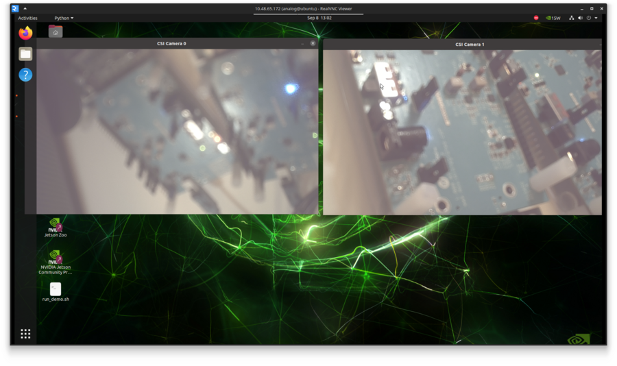

Once Linux boots, you’ll see on the DP monitor the Linux desktop and a shortcut
named run_demo.sh. Double-clicking on the icon will start the evaluation
application. The evaluation application GUI will be displayed like in the figure below.

Figure 9 Evaluation Application GUI
Power off Sequence
Open a terminal and type sudo poweroff. This will safely power off the Nvidia Orin Nano Developer Kit and ensure that the SD card is properly unmounted.
Remove the power supply from the Nvidia Orin Nano Developer Kit.
Flip the power switch labeled S1 to the OFF position on the GMSL Serializer Evaluation Kit.
Flip the power switch labeled S4 to the OFF position on the GMSL Deserializer Evaluation Kit.
Remove the power supply from the GMSL Deserializer Evaluation Kit.
Getting the Software
The GMSL Linux kernel drivers, the complete Linux distributions for the
supported processing platforms, and software user guides can be found on the
Analog Devices GMSL GitHub repository.

{kind=link}
{kind=link}
{kind=link}
{kind=link}
{kind=link}
{kind=link}
{kind=link}